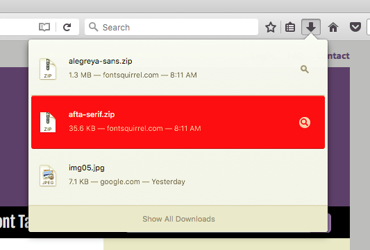
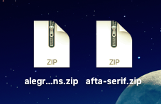
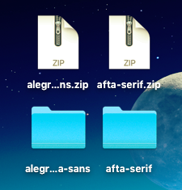
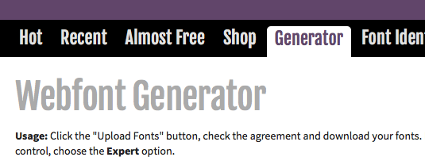
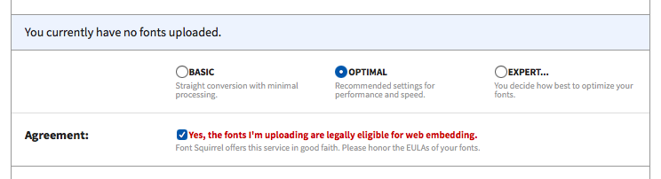
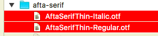
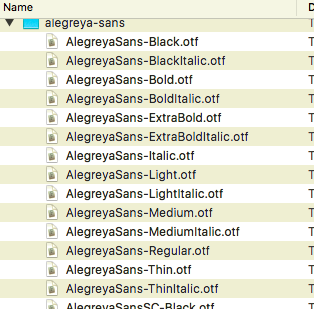
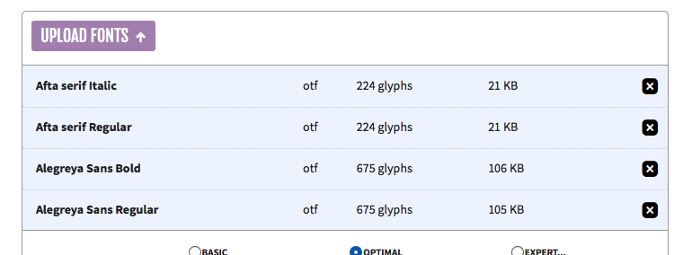
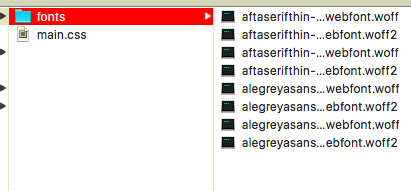
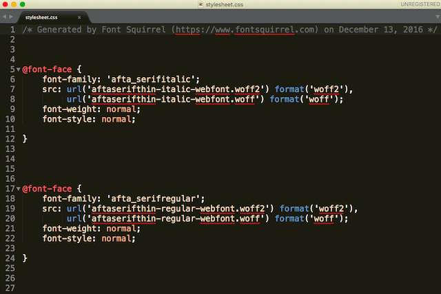

First up: Media Query
A css media query is a rule in css where you can obtain and utilize the dimensions of the browser window to dynamically change your website based on the current dimensions of the window.
I put the css for this page within the HTML for convenience.
Next: Fonts
There a handful of ways to apply fonts to an HTML document, here are two of the ways I prefer to do so:
Linking
If you only have one page and you want fonts quickly you can use this method.
Show content
Step one:
Go to google fonts.
Step two:
Select your fonts.
Step three:
Copy the HTML link element provided by the website, and paste it ABOVE your other css links (or your <style>).
Step four:
Apply the css from google's website to your css.
Font face
If you have multiple web pages, the linking method could impact load time significantly, especially if you have more than three fonts. What do you do? You choose the css font-face rule! It's how I applied the fonts to these web pages you're viewing right now.
Show content
Step 1:
Go to fontsquirrel.com, and pick out your fonts.
Don't choose 'OFFSITE' fonts, those aren't usually free.
Step 2:
Download the fonts you have chosen.

Step 3:
Move those files to the desktop, and unzip them.


Step 4:
Go back to fontsquirrel, and select the 'generator'.

Step 5:
Don't mess with the options under the upload button. Click the agreement to continue.

Step 6:
Click 'Upload fonts'.
Step 7:
Now, select upload fonts. If there are quite a few variations in your file (see below for example) You should only upload the ones you absolutely need, these would normally be regular, bold, and/or italic.

example of a large list:

Step 8:
After you have chosen your fonts and uploaded them, you should be presented with a list like this (below), and then you should download the kit with the button below it.

Step 9:
After downloading, and unzipping, you should have a file with all of the newly converted fonts, as well as an example of each, and a stylesheet at the bottom. Inside your website's directory, commonly placed inside the css folder, you will create a 'fonts' folder, and place every *.woff, and *.woff2 file within it.

Step 10:
Open the stylesheet with your favorite text editor. it could be notepad, just anything that will allow you to save it as a css file.

Step 11:
Inside the css, the font urls must have their destination changed to where you have your fonts stored, so if they're in a 'fonts' folder within the css folder, you would change the url to
'fonts/font.woff and 'fonts/font.woff, whereas if your fonts are in the main directory with the index.html, your fonts' urls should be
'../fonts/font.woff'.
Step 12:
After adding the appropriate destination to the url, you must then copy the css you modified and paste it to the top of your current css.
Step 13: (optional)
You can change the name of the fonts you've loading in the css to make them easier to type, as they can be strenuous, but if you don't wish to do that, then you're finished, all you have to do is use them!